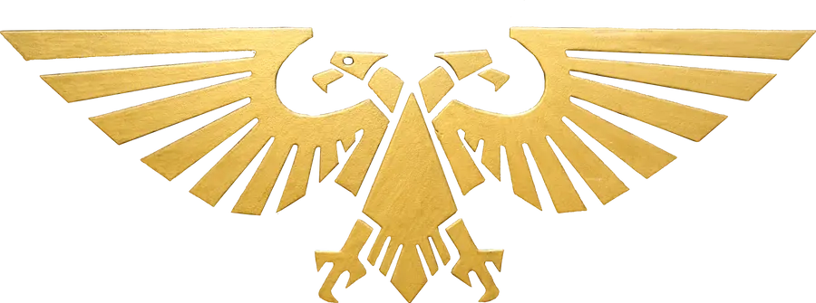

Imperial Iconography & Warhammer 40K Visual Language
Thematic elements are decorative details that don't affect functionality but dramatically enhance immersion. They include:

Two-headed eagle, symbol of the Imperium
Servo-skulls, chapter badges, memento mori
Wax seals with Gothic text
Deathwatch serves the Inquisition
Industrial, militaristic ceramite plating
Illuminated manuscript frames
Add faint Imperial Aquila eagles to the top corners of character sheets. Extremely subtle (15% opacity) but distinctive.
Add a red wax seal with skull impression to the left of section headers. Looks like official Imperial documentation.
Add rivet decorations in all four corners plus a faint Aquila watermark (3% opacity) in the center. Looks like Power Armor ceramite plating.
Add illuminated manuscript-style corner brackets and a decorative bullet on the header. Looks like official Imperial battle reports.
Add faint icon watermarks (5% opacity) behind status values. Reinforces meaning at a glance: medical cross for wounds, skull for fatigue.
Add a massive Inquisitorial "I" watermark (3% opacity) — the Deathwatch serves the Inquisition. Plus corner brackets for tactical display framing.
NOTE: For the Imperial Aquila, use the authentic icons/aquila.webp file for consistent, professional appearance. Other decorative icons below use Unicode characters — no external images required.
Critical: Always use appropriate opacity levels. Too high = distracting clutter. Too low = invisible waste.
☐ Add Aquila corners to sheet headers (15% opacity)
☐ Add wax seals to section headers
☐ Add rivets to characteristic boxes
☐ Add Aquila watermarks to characteristic boxes (3% opacity)
☐ Add corner brackets to chat cards
☐ Add decorative bullets to chat headers
☐ Add icon watermarks to status boxes (5% opacity)
☐ Add Inquisitorial "I" to cohesion panel (3% opacity)
☐ Test cross-browser/platform icon rendering
☐ Verify opacity levels don't distract from content